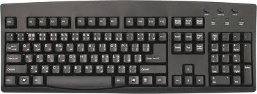
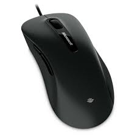
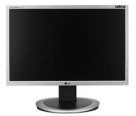
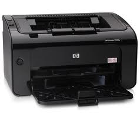
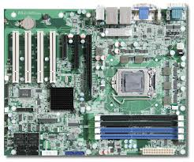
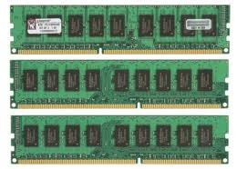

In computing, a keyboard is a typewriter-style device, which uses an arrangement of buttons or keys, to act as mechanical levers or electronic switches. Following the decline of punch cards and paper tape, interaction via teleprinter-style keyboards became the main input device for computers.
A keyboard typically has characters engraved or printed on the keys and each press of a key typically corresponds to a single written symbol. However, to produce some symbols requires pressing and holding several keys simultaneously or in sequence. While most keyboard keys produce letters, numbers or signs (characters), other keys or simultaneous key presses can produce actions or computer commands.
Despite the development of alternative input devices, such as the mouse, touchscreen, pen devices, character recognition and voice recognition, the keyboard remains the most commonly used and most versatile device used for direct (human) input into computers.

Index
In computing, a mouse is a pointing device that functions by detecting two-dimensional motion relative to its supporting surface. Physically, a mouse consists of an object held under one of the user's hands, with one or more buttons.
The mouse sometimes features other elements, such as "wheels", which allow the user to perform various system-dependent operations, or extra buttons or features that can add more control or dimensional input. The mouse's motion typically translates into the motion of a pointer on a display, which allows for fine control of a graphical user interface

Index
A monitor or a display (also called screen or visual display unit) is an electronic visual display for computers. The monitor comprises the display device, circuitry and an enclosure. The display device in modern monitors is typically a thin film transistor liquid crystal display (TFT-LCD) thin panel, while older monitors use a cathode ray tube (CRT) about as deep as the screen size.
Originally, computer monitors were used for data processing while television receivers were used for entertainment. From the 1980s onwards, computers (and their monitors) have been used for both data processing and entertainment, while televisions have implemented some computer functionality. The common aspect ratio of televisions, and then computer monitors, has also changed from 4:3 to 16:9 (and 16:10).

Index
In computing, a printer is a peripheral which produces a representation of an electronic document on physical media such as paper or transparency film. Many printers are local peripherals connected directly to a nearby personal computer. Individual printers are often designed to support both local and network connected users at the same time. Some printers can print documents stored on memory cards or from digital cameras and scanners.
Multifunction printers (MFPs) include a scanner and can copy paper documents or send a fax; these are also called multi-function devices (MFD), or all-in-one (AIO) printers. Most MFPs include printing, scanning, and copying among their many features.

Index
A motherboard (sometimes alternatively known as the mainboard, system board, planar board or logic board,[1] or colloquially, a mobo) is a printed circuit board (PCB) found in all modern computers which holds many of the crucial components of the system, such as the central processing unit (CPU) and memory, and provides connectors for other peripherals.
Motherboard specifically refers to a PCB with expansion capability - the board is the "mother" of all components attached to it, which often include sound cards, video cards, network cards, extra hard drives or other forms of persistent storage, TV tuner cards, cards providing extra USB or Firewire slots, and a variety of thousands of other kinds of custom components. (The term mainboard is applied to devices with a single board and no additional expansions or capability - in modern terms this would include controlling boards in televisions, washing machines and other embedded systems, which are not true motherboards.)

Index
Random-access memory (RAM) is a form of computer data storage. A random-access device allows stored data to be accessed in very nearly the same amount of time for any storage location, so data can be accessed quickly in any random order. In contrast, other data storage media such as hard disks, CDs, DVDs and magnetic tape, as well as early primary memory types such as drum memory, read and write data only in a predetermined order, consecutively, because of mechanical design limitations. Therefore the time to access a given data location varies significantly depending on its physical location.
Today, random-access memory takes the form of integrated circuits. Strictly speaking, modern types of DRAM are not random access, as data is read in bursts, although the name DRAM / RAM has stuck. However, many types of SRAM, ROM, OTP, and NOR flash are still random access even in a strict sense. RAM is often associated with volatile types of memory (such as DRAM memory modules), where its stored information is lost if the power is removed. Many other types of non-volatile memory are RAM as well, including most types of ROM and a type of flash memory called NOR-Flash. The first RAM modules to come into the market were created in 1951 and were sold until the late 1960s and early 1970s.

Index